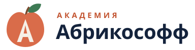
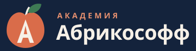
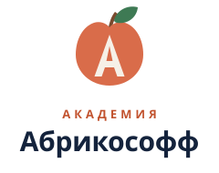
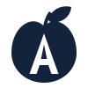

Ассеты, токены, правила и открытые вопросы — всё, что нужно, чтобы собрать MVP без догадок.

logo-horizontal.svg
logo-horizontal-dark.svg
logo-vertical.svg
logo-mark-mono.svg:root {
--background-page: #F6F0E7;
--background-surface: #FFFFFF;
--background-subtle: #FAF6EE;
--text-primary: #14233C;
--text-secondary: #5E6A80;
--text-lecture: #26334B;
--action-primary: #C2532F;
--action-primary-hover: #A84526;
--brand-terracotta: #D96C4A;
--accent-gold: #D2A84C; /* только декор */
--border-default: #E4DCCC;
--border-strong: #D8CFBE;
--status-success: #3E7A54; /* тинт #E7F0E9 */
--status-warning: #A6731D; /* тинт #F6ECD9 */
--status-error: #B42318; /* тинт #F7E5E2 */
--disabled-bg: #EBE4D6;
--disabled-text: #9A9284;
--focus-ring: 0 0 0 3px rgba(194,83,47,.35);
--radius-control: 10px; /* кнопки, поля */
--radius-card: 12px;
--radius-modal: 16px;
--shadow-sm: 0 1px 2px rgba(20,35,60,.06);
--shadow-md: 0 4px 12px rgba(20,35,60,.08);
--shadow-lg: 0 12px 32px rgba(20,35,60,.14);
/* отступы: 4 8 12 16 24 32 48 64 */
/* брейкпоинты: 320 390 768 1024 1440 */
/* контейнер 1140 · колонка лекции 680 */
}
{kind=link}
{kind=link}
{kind=link}
{kind=link}
{kind=link}
{kind=link}
{kind=link}